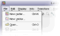
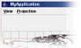
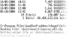
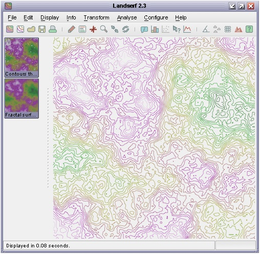

jwo.landserf.process classesGISFrame interface. GISFrame, GISFrameAdapter, GUIFrame and SimpleGISFrame classes. jwo.landserf.process package and start it as a threaded process. GISFrame used by a processing class. GISFrame
We have already seen how to read, create and write raster and vector spatial objects using Java and the LandSerf
classes. When writing your own programs it is likely that you are doing so because you wish to perform some
processing of those spatial objects between the reading and writing stages. You can take advantage of much of the
processing functionality of LandSerf by creating objects from the
jwo.landserf.process package.
Classes in this package handle tasks that involve some significant (often time consuming) analysis and processing
operations.
Different processing operations will require a range of spatial objects for input, and may create many different
output spatial objects. For example, surface peak detection requires a DEM as input, and creates up to three raster
maps and one vector map as output. Other routines such as fractal surface generation require no input spatial objects
at all. To handle the varying input and output demands of different processes, all the classes in this package use a
jwo.landserf.gui.GISFrame to hold the
potential collection of input and output spatial objects. The GISFrame is an interface that defines the
minimum requirements for assembling spatial objects, often in the form of a graphical user interface. For example,
jwo.landserf.gui.GUIFrame is the main
GUI window that implements a GISFrame and is used when you normally start LandSerf.
As a programmer, you must decide whether to create a graphical user interface for your program or whether it is
to run from the command line. If you do create a GUI, should it use the 'normal' LandSerf GUI or do you wish to
create your own GUI? Depending on what you choose, there are various incarnations of GISFrame you
can use:
| Type of user interface | GISFrame to use |
|  'LandSerf' GUI |
jwo.landserf.gui.GUIFrame |
|  Customised GUI |
Inherit jwo.landserf.gui.SimpleGISFrame or jwo.landserf.gui.GISFrameAdapter |
|  Command line interface |
Inherit jwo.landserf.gui.SimpleGISFrame |
The easiest to use is probably the SimpleGISFrame that implements
the spatial object storage methods allowing any number of raster maps or vector maps to be added and removed. We will use this class
in the discussion below. The GISFrameAdapter is simply
an 'empty' implementation of the GISFrame that contains no functionality, but speeds up the process of creating a class
that implements the interface. This is only really necessary if you are creating a customised user interface that behaves in a very
different way to the one used by LandSerf.
Spatial objects can be added to a GISFrame by calling the addRaster() or addVectorMap()
methods. Raster and vector maps can be added as primary (default), secondary or unselected objects. This
distinction is important in determining which objects are selected by the processing classes. Most operator on the currently
selected primary object, while some require both a primary and secondary selected object. Output from the processing classes can be
as new primary, secondary or unselected objects stored in the GISFrame.
You can consult the Landserf 2.3 API documentation to find out what input is required and output produced by each of the processing classes. You may also find the table below a useful summary.
| Processing class | Input objects | Output objects |
| BasinThread | Primary raster (surface) and primary vector (seed points) | Secondary raster (drainage basins) |
| CentroidThread | Primary vector (polygons) | Primary vector (polygon centroids) |
| CombinePointsWithRasterThread | Primary raster and primary vector (points) | Primary vector (points with new raster attributes) |
| CombineThread | Primary and secondary raster or primary and secondary vector | Unselected raster or vector |
| ContourThread | Primary raster (surface) | Primary vector (contours) |
| DeleteThread | Objects provided to constructor | None |
| DemToTinThread | Primary raster (surface) | Primary vector (TIN) and optional secondary raster (error map) |
| DispThread | Primary spatial objects and optional secondary objects | None |
| FlowThread | Primary raster (surface) | Secondary raster (flow magnitudes) |
| FracSurfaceThread | Empty primary raster (for raster dimensions) | Primary raster (fractal surface) |
| FuzzyFeatureThread | Primary raster (surface) | 6 unselected rasters (pits, channels, passes, ridges, peaks, planes) |
| JoinVectorThread | Primary vector (fragmented lines) | Primary vector (joined lines) |
| OpenThread | Objects provided to constructor | Primary spatial object(s) and optional unselected objects (if more than one raster or vector provided) |
| PeakClassificationThread | Primary raster (surface) | Secondary raster (peaks) and optional primary vector (summits) and optional unselected rasters (fuzzy peaks and peak hierarchy) |
| PitRemovalThread | Primary raster (surface) | Secondary raster (pitless surface) and unselected raster (pits map) |
| PointDensityThread | Empty raster (for dimensions of density surface) and (points) vector provided to the constructor | Primary raster (density surface) |
| PolySurfaceThread | Primary raster (for dimensions) | Primary raster (polynomial surface) |
| ProjectionThread | Primary raster or primary vector | Primary raster or primary vector (re-projected map) |
| RectifyThread | Raster provided to the constructor (unrectified) | Primary raster (rectified raster) |
| SaveThread | Primary raster or primary vector | None |
| ScaleParamThread | Primary raster (surface) | Secondary raster (average surface parameter values), unselected raster (variation in surface parameter values) |
| SelectVectorThread | Primary vector (source map) | Primary vector (selected objects) |
| SimplifyThread | Primary vector (source map) | Primary vector (simplified objects) |
| SurfNetworkThread | Primary raster (surface) and secondary raster (surface features) | Primary vector (surface network) and secondary raster (thinned surface network) |
| SurfParamThread | Primary raster (surface) | Secondary raster (surface parameter) |
| TinPointsThread | Primary vector (points or TIN) | Primary vector (TIN or points) |
| TinToDemThread | Primary vector (TIN) | Primary raster (surface) |
| TransRastThread | Primary raster (source) | Primary raster (transformed raster) |
| UpdateThread | None | None (updates display) |
| VectorToRasterThread | Empty vector (source) and raster (for dimensions) provided to the constructor | Primary raster (rasterized vector) |
| View3dThread | Primary raster (surface), optional primary vector (overlay) and active GraphicsArea (display) |
None |
| VoidRemovalThread | Primary raster (with voids) | Primary raster (without voids) |
All the processing classes mentioned above inherit LSThread which
handles messages by the processor and allows the class to be threaded. This can be useful for constructing GUIs, as many of the processing
tasks can take some time to complete. By threading their processing, other GUI activities can continue while processing takes place.
To execute one of the processing classes as a threaded process, simply create an object from it and call its start() method.
For example,
SurfParamThread processor = new SurfParamThread(gisFrame, mySurfParam);
processor.start();
This will call the processor's doProcessing() method automatically, and inform the parent GUI
(gisFrame) when it is complete. Calling the start() method is preferred to calling doProcessing()
directly, since the former also initialises the message communication between the processing class as the gisFrame.
If you are creating a command line interface where GUI activities are not going to be taking place while the process runs, it may
make more sense not to run a process in parallel with other activities. In particular, it may be necessary to know when the process
has completed before, for example, saving an output file to disk. The easiest way to do this is probably to let your class 'join'
the thread (in other words, halt further execution until the thread has completed). For example,
SurfParamThread processor = new SurfParamThread(gisFrame, mySurfParam);
processor.start();
processor.join();
// This point is reached when the processor has completed its task.
Alternatively, you can poll the thread repeatedly until it has completed by calling the thread's isAlive()
method.
An example illustrating these ideas showing how processing classes may be used is shown below:
1 2 3 4 5 6 7 8 9 10 11 12 13 14 15 16 17 18 19 20 21 22 23 24 25 26 27 28 29 30 31 32 33 34 35 36 37 38 39 40 41 42 43 44 45 46 47 48 49 50 51 52 53 54 55 56 57 58 59 60 61 62 63 64 65 66 67 68 69 |
import jwo.landserf.structure.*; // For spatial object class. import jwo.landserf.gui.*; // For GISFrame. import jwo.landserf.process.*; // For processing classes. import jwo.landserf.process.io.*; // For file handling. // ********************************************************** /** Creates a fractal surface and contours it. Demonstrates * how processing classes can be used. * @author Jo Wood * @version 1.1, 16th October, 2007 */ // ********************************************************** public class Fractal { //------------------ Starter Method ----------------- public static void main(String[] args) { new Fractal(); } //------------------- Constructor ------------------- public Fractal() { // Create a GISFrame that will store raster and vector maps. GISFrame gisFrame = new SimpleGISFrame(); // Add a blank raster to the GISFrame. RasterMap fracRaster = new RasterMap(400,400,new Footprint(450000,280000,50,50)); fracRaster.getHeader().setTitle("Fractal surface"); gisFrame.addRaster(fracRaster,GISFrame.PRIMARY); // Create and start threaded process to generate fractal surface. FracSurfaceThread fracThread = new FracSurfaceThread(gisFrame,2.2f); fracThread.start(); try { fracThread.join(); // Join thread (i.e. wait until it is complete). } catch (InterruptedException e) { System.err.println("Error: Fractal generation thread interrupted."); return; } System.out.println("Fractal surface created."); // Create and start a threaded process to contour the fractal. float minVal = fracRaster.getMinAttribute(); float range = fracRaster.getMaxAttribute()-minVal; ContourThread contourThread = new ContourThread(gisFrame,minVal,range/30f,4); contourThread.start(); try { contourThread.join(); // Join thread (i.e. wait until it is complete). } catch (InterruptedException e) { System.err.println("Error: Contouring thread interrupted."); return; } System.out.println("Fractal surface contoured."); // Write new raster and vector maps to file. LandSerfIO.write(fracRaster,"fractal.srf"); LandSerfIO.write(gisFrame.getVectorMap1(),"contours.vec"); } } |
Running the class above produces two new spatial objects - the raster map fractal.srf and the vector
map contours.vec. They are shown below (since the fractal is randomly generated each time, the form
of the surface will vary each time this program is run).

Fractal surface and contour output from Fractal
Fractal above and creates a new vector map
containing only those contour lines above the midpoint between the highest and lowest elevations.
SelectVectorThread to perform the contour selection process.